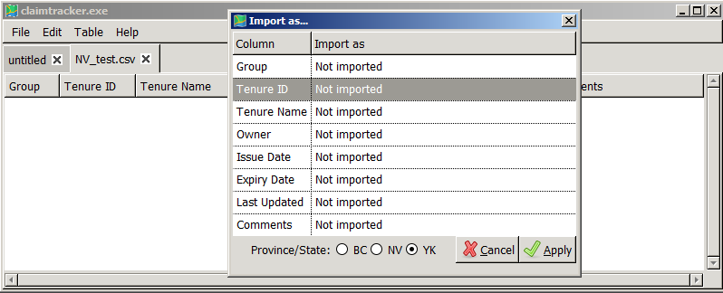

Creating a table from scratch
When claimtracker first starts, a blank, untitled table opens in a new tab, which by default is set to track Yukon claims. To change the table's settings, including the province/state where the claims are registered, this file must first be saved.
Saving a table
Entries are saved in a comma-seperated-values file (.csv), which can be opened in Microsoft Excel or a text editor. In addition, an initialization file (.ini) will be saved in the same directory, which contains configuration values and maps the required categories to the columns in the file. Each file will contain at least eight categories in eight columns, which occupy the first row. The categories are: Group, Tenure ID, Tenure Name, Owner, Issue Date, Expiry Date, Last Updated and Comments. If you are saving a new file, then these categories will be filled automatically. If you have opened a file containing columns that correlate with these columns, then upon saving, these columns will be mapped to the required categories. If the file does not have a column that correlates with one of the eight categories, then a new column will be added to the file.
To save a file, select File>>Save Table from the menu.
Adding to the table
To add an entry to a table in claimtracker, right click a row and select 'new'. Columns that can be modified are: Group, Tenure ID and Comments. A valid Tenure ID is required to update the claim information. Alternativley, entries can be added to the file in Microsoft Excel or any other external editor.
Opening a table for the first time
When claimtracker opens a file for the first time, it will present you with a
dialog to map the file's columns to the eight claimtracker categories. One
column must be mapped to proceed, to any category. The import wizard dialog is
shown in the screenshot below:

In addition, the dialog presents an option to select which state or province
tenures are located in. It is important to select the right jursidiction, because
each one has a specific method for fetching data.
Modifying a table
It is possible to modify the table's mapping, or change the table's jurisdiction, by selecting File>>Import Wizard from the menu.